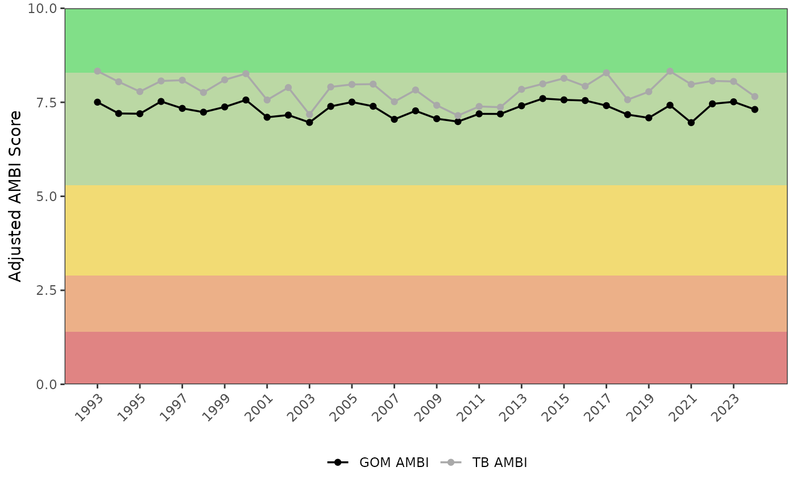

Plot mean AMBI scores over time by bay segment
Arguments
- ambiscr
input data frame as returned by
anlz_ambiscr, the AMBI variant (conventional or Tampa Bay-specific) is detected automatically from the column names- ambiscr_tb
optional second input data frame from
anlz_ambiscrfor overlaying the other AMBI variant on the same plot- bay_segment
chr string for the bay segment, one to many of "HB", "OTB", "MTB", "LTB", "TCB", "MR", "BCB", "All". When multiple segments are selected (or "All"), scores are averaged across all sites in the selected segments.
- yrrng
numeric vector of length two indicating the year range to plot
- yscl
logical indicating whether the y-axis should span the full adjusted AMBI range (0 to 10, default
TRUE) or be scaled to the range of the annual means (FALSE)- plotly
logical if the plot is created using plotly
- width
numeric for width of the plot in pixels, only applies if
plotly = TRUE- height
numeric for height of the plot in pixels, only applies if
plotly = TRUE
Value
A ggplot object showing mean adjusted AMBI scores by year if plotly = FALSE, otherwise a plotly object
Details
The background of the plot is shaded by AMBI pollution category using the adjusted score thresholds (0-10 scale, higher = healthier): Unpolluted (8.29-10, dark green), Slightly Polluted (5.29-8.29, light green), Meanly Polluted (2.89-5.29, yellow), Heavily Polluted (1.39-2.89, orange), and Extremely Polluted (0-1.39, red).
Only sampling funded by TBEP and as part of the routine EPC benthic monitoring program are included.
If both ambiscr and ambiscr_tb are provided, both series are shown on the same plot with black used for the first series and dark grey for the second. The AMBI variant for each input is detected automatically from the column names (AMBI or TBAMBI).
Examples
ambiscr <- anlz_ambiscr(benthicdata)
ambiscr_tb <- anlz_ambiscr(benthicdata, type = 'AMBI-TB')
show_ambitrend(ambiscr, ambiscr_tb)
